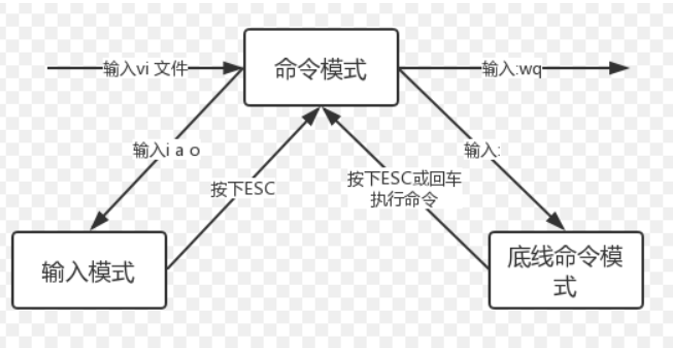
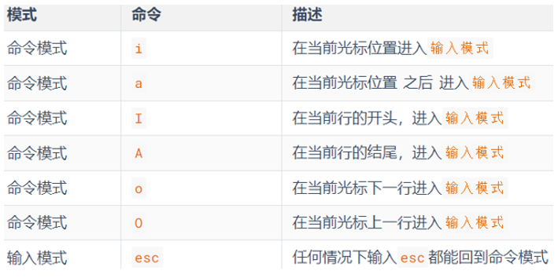
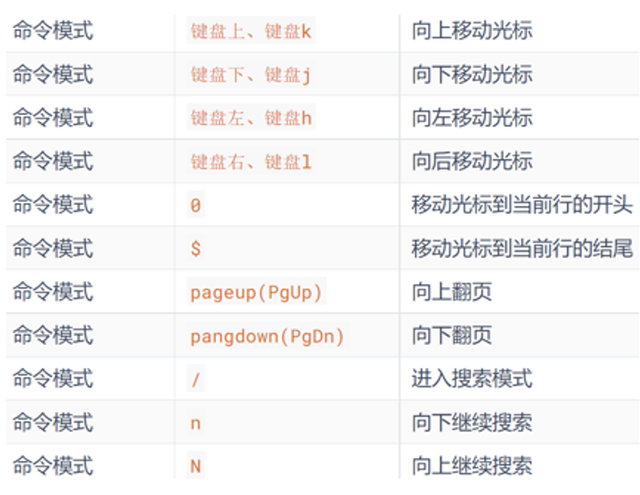
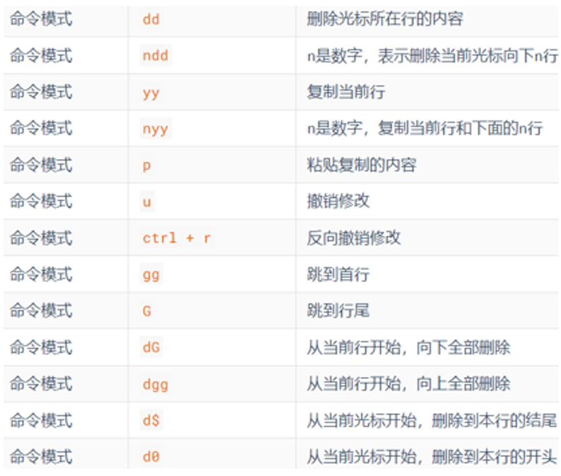
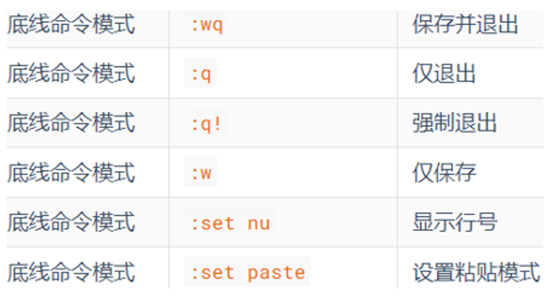

# vi/vim 编辑器
vi/vim 编辑器是 linux 中的文本编辑器，其中 vim 比 vi 的功能更加强大，可以编辑 shell 程序，推荐使用 vim，下面也将介绍 vim 如何使用。
# 2-1 vi/vim 的三种工作模式
# 命令模式
在此模式下，所敲的每一个键都是一个命令，不可以进行文本编辑。比如输入 w 代表保存等待。
# 输入模式
也就是编辑模式或者插入模式。在此模式下，可以对文件内容进行自由编辑。
# 底线命令模式
用于文件的保存，退出等等。

# 2-2 vi/vim 的使用方法
vi或vim 文件路径
注意：如果路径上的文件不存在则会创建新文件，如果存在则编辑已有文件。
命令模式快捷键：



底线命令模式：
在编辑模式中按 esc 退出后，然后通过 : 即可进入底线模式。
